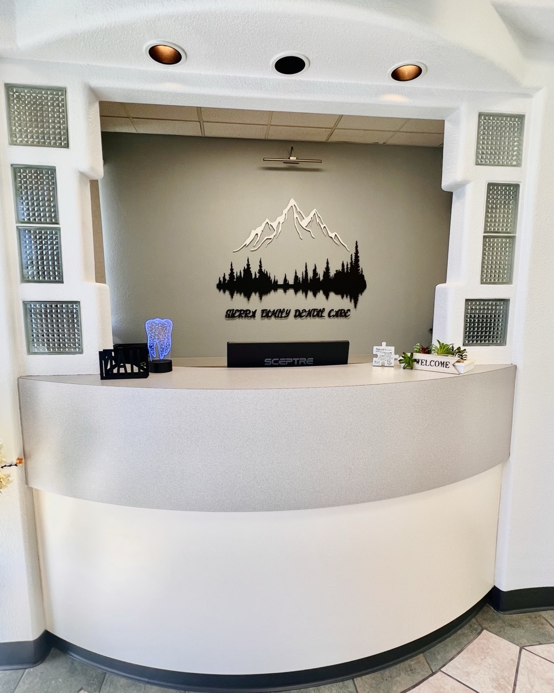
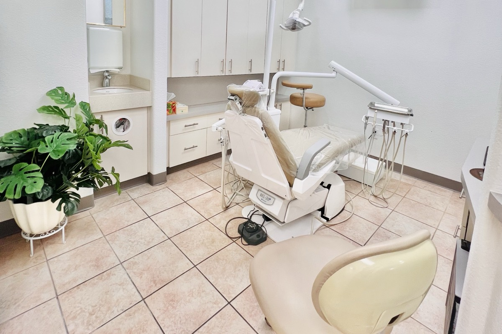
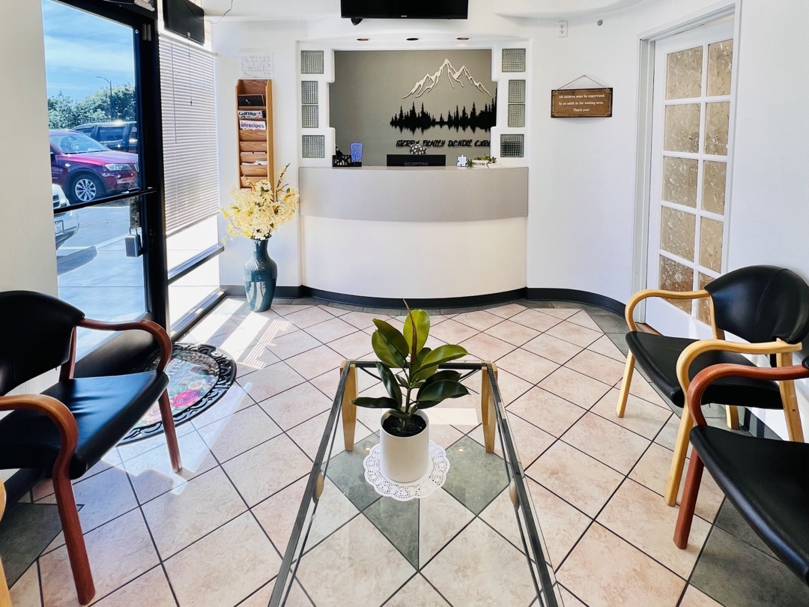

General dentistry
Checkups and cleanings for patients of all ages, with X-rays, a gum check and an oral cancer screening.
Family dentist · Alum Rock Ave · San Jose
General and family dentistry with Dr. Darshini Shah, DDS, at 2652 Alum Rock Ave, Suite A, in San Jose.
4.871 Google reviews
SaturdaysOpen 9 AM – 4 PM
InsuranceAlmost all major dental PPOs
Cash patientsDiscounts & financing options
StaffMultilingual
Services
Checkups and cleanings for patients of all ages, with X-rays, a gum check and an oral cancer screening.
Fillings, crowns and bridges that repair decayed or damaged teeth.
Work that improves the color, shape and alignment of your smile.
A custom-made series of clear aligners that straighten teeth without metal braces.
Root canal treatment to save a tooth when the pulp inside is infected.
An implant is an artificial tooth root that holds a replacement tooth or bridge.
Crowns, bridges and dentures to replace damaged or missing teeth.
Help with snoring and sleep apnea, working with your physician and a sleep specialist.
About the practice
Your dentist
Dr. Darshini received her CA state license in 2005, and since then she has been providing gentle, affordable and quality dental care to her patients in the Bay Area. Her mission is to educate and involve patients in their dental care. She takes pride in explaining to her patients thoroughly about their dental problems and how to prevent such issues in the future, and she continues to enhance her skills by taking many hours of continuing education courses.
Dentist · licensed in California since 2005

Insurance & payment
We accept almost all major dental PPO and dental discount plans. These are a few of the plans popular with our patients. Don't see yours? Call and ask.
Reviews
“We’ve had a wonderful experience at Sierra Family Dental Care with Dr. Darshini Shah, especially as parents bringing in our kids. Dr. Shah is incredibly patient, kind, and takes the time to explain everything in a way that both kids and adults can understand. She truly puts children at ease, which makes dental visits stress-free instead of scary. …”
Nirav Jain · Google review
“… From the moment I walked in, I was treated with kindness, professionalism, and genuine care. The clinic is clean, well-organized, and runs on time — which I really appreciate. Dr. Darshini takes the time to explain procedures clearly and makes sure you're comfortable every step of the way.”
Sumit Sheth · Google review
“Dr. Shah is very friendly and knowledgeable. She makes recommendations clear and explains them well, but isn't pushy or focused on up-selling, as I've experienced elsewhere. She also uses tech well, for example using digital photography to point out problem areas, and even to show before/after shots of cavity fillings.”
Benjamin T. · Opencare review
Hours

Location
2652 Alum Rock Ave, Suite A
San Jose, CA 95116